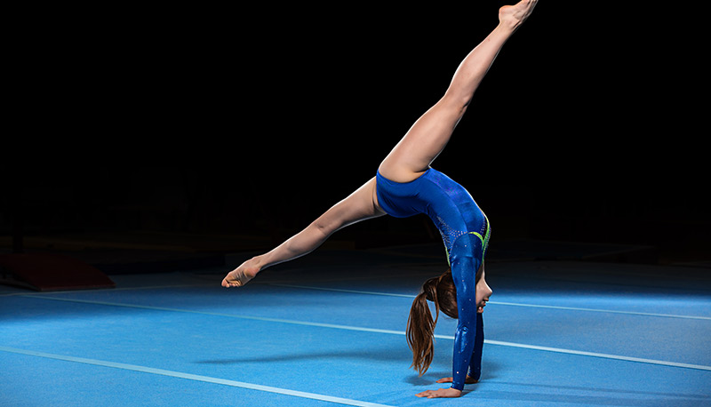
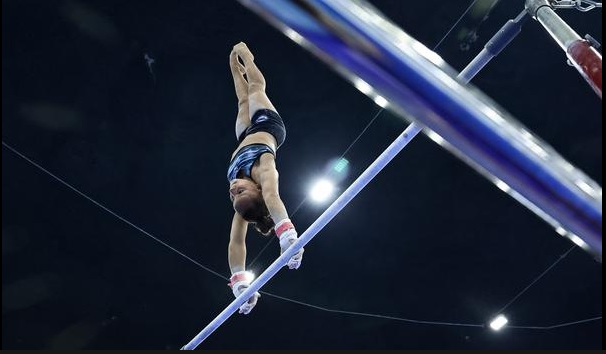

Meu esporte favorito é Ginástica Artística
 Em nosso site, mergulhe no universo encantador da ginástica que começou como uma paixão aos 7 anos e se transformou em uma jornada de movimento, flexibilidade e conquistas aos 13. Descubra a beleza dos exercícios, os desafios que superamos e as alegrias que a ginástica nos proporciona. Explore conosco esse mundo de energia e vitalidade, e celebre conosco a arte de se expressar através do corpo. Bem-vindo ao nosso espaço dedicado à ginástica, onde cada salto e movimento contam uma história de determinação e diversão!